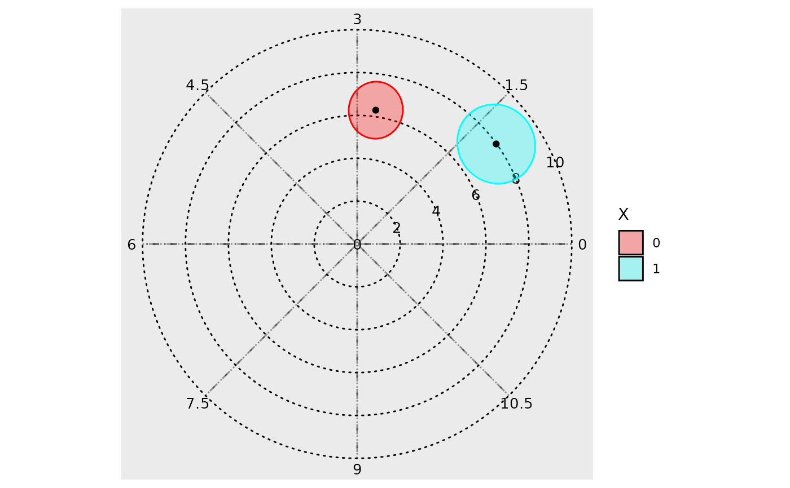

create a (sub) polar plot (iterated over for each component)
Source:R/polar_plot-sub-polar.R
sub_ggplot.cglmm.polar.Rdcreate a (sub) polar plot (iterated over for each component)
Usage
sub_ggplot.cglmm.polar(
comp,
x,
sum,
direction,
offset,
radial_units,
grid_angle_segments,
n_breaks,
zoom,
circle_linetype,
text_size,
text_opacity,
ellipse_opacity,
overlay_parameter_info,
fill_colors_check,
xlims_check,
xlims,
ylims_check,
ylims,
quietly,
overlay_start,
fill_colors,
zoom_origin
)Arguments
- comp
Component.
- x
cglmm object.
- sum
Model summary.
- direction
ifelse(clockwise, -1, 1).- offset
Applied to start position of phase angle.
- radial_units
Units for phase.
- grid_angle_segments
Number of sugments.
- n_breaks
Number of breaks for amplitude.
- zoom
Whether or not it is zoomed in.
- circle_linetype
linetype for concentric circles.
- text_size
Text size for axes.
- text_opacity
Text opacity for axes.
- ellipse_opacity
Opacity of confidence ellipses.
- overlay_parameter_info
Whether or not to show amplitude/phase estimates.
- fill_colors_check
!missing(fill_colors).- xlims_check
TRUEif limits are unspecified.- xlims
User-specified limits.
- ylims_check
TRUEif limits are unspecified.- ylims
User-specified limits.
- quietly
Send possibly unnecessary messages to console.
- overlay_start
background axes positioning.
- fill_colors
Colours for ellipses.
- zoom_origin
Zoom position if used.
Examples
model <- cglmm(
vit_d ~ amp_acro(time_col = time, group = "X", period = 12),
data = vitamind
)
GLMMcosinor:::sub_ggplot.cglmm.polar(
comp = 1,
x = model,
sum = summary(model),
direction = 1,
offset = 0,
radial_units = "period",
grid_angle_segments = 8,
n_breaks = 5,
zoom = FALSE,
circle_linetype = "dotted",
text_size = 3.5,
text_opacity = 1,
ellipse_opacity = 0.3,
overlay_parameter_info = FALSE,
fill_colors_check = FALSE,
xlims_check = FALSE,
ylims_check = FALSE,
quietly = TRUE,
overlay_start = 0,
zoom_origin = FALSE
)
